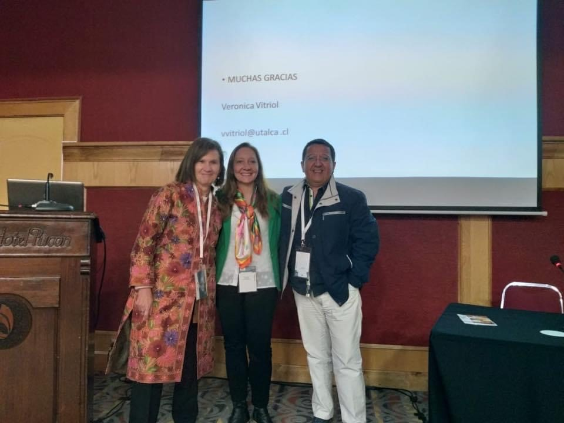

Cada uno tenemos una forma de SER y VIVIR en el mundo única y particular que define como somos y determina nuestras acciones, reacciones, decisiones, formas de relacionarnos con otros que son estables a través del tiempo... Sin embargo, pueden ocurrir circunstancias puntuales en la vida o períodos de crisis que generen un peor funcionamiento debido al sufrimiento o malestar que provocan. Lo importante es que son justamente estas reacciones frente las que, bien “aprovechadas” pueden convertirse en una invaluable oportunidad de autoconocimiento y cambio. Pensemos: si uno tiene la posibilidad de ser la mejor versión de uno mismo ¿tiene lógica seguir teniendo las mismas reacciones a los problemas de siempre? ¿Será que esas reacciones mantienen justamente el problema? ¿Hasta qué punto estoy dispuest@ a seguir soportando una situación o relación desagradable?... Los viejos y repetidos problemas ¿no serán acaso una “zona de confort” de la que en realidad, no quiero salir?. El desafío consiste en ser capaz de pensar (en vez de evitar o minimizar) acerca de aquello que “incomoda, duele, molesta”, ya que estas experiencias nos brindan la posibilidad de entender por ejemplo: por qué nos comportamos de tal o cual manera, cómo nos estamos relacionando con los demás que puede estar causando un conflicto, en fin. Descubrir las debilidades del carácter, potenciar las áreas fuertes de la personalidad, tener una mayor consciencia y dominio de los objetivos que buscamos en nuestras vidas, pasa por tener claridad sobre quienes somos y qué queremos.

Dra Verónica Vitriol, Ps Soledad Ballesteros, Dr Alfredo Cancino, presentación Congreso Sonepsyn 2018.